1 Visualizing Seurat objects
library(Seurat)
dir = "data/filtered_gene_bc_matrices/hg19"
pbmc.data <- Read10X(data.dir = dir)
pbmc <- CreateSeuratObject(counts = pbmc.data, project = "pbmc3k", min.cells=3, min.features=200)
pbmc## An object of class Seurat
## 13714 features across 2700 samples within 1 assay
## Active assay: RNA (13714 features, 0 variable features)
## Normalizing the data
pbmc <- NormalizeData(pbmc, normalization.method = "LogNormalize",
scale.factor = 10000)
pbmc <- NormalizeData(pbmc)
## Identify the 2000 most highly variable genes
pbmc <- FindVariableFeatures(pbmc, selection.method = "vst", nfeatures = 2000)
## In addition we scale the data
all.genes <- rownames(pbmc)
pbmc <- ScaleData(pbmc, features = all.genes)
pbmc <- RunPCA(pbmc, features = VariableFeatures(object = pbmc),
verbose = FALSE)
pbmc <- FindNeighbors(pbmc, dims = 1:10, verbose = FALSE)
pbmc <- FindClusters(pbmc, resolution = 0.5, verbose = FALSE)
pbmc <- RunUMAP(pbmc, dims = 1:10, umap.method = "uwot", metric = "cosine")
## Run tSNE
pbmc <- RunTSNE(pbmc, reduction = "pca", dims=1:5, tsne.method = "Rtsne")
## Assigning cell type identity to clusters
new.cluster.ids <- c("Naive CD4 T", "CD14+ Mono", "Memory CD4 T", "B", "CD8 T",
"FCGR3A+ Mono", "NK", "DC", "Platelet")
names(new.cluster.ids) <- levels(pbmc)
pbmc <- RenameIdents(pbmc, new.cluster.ids)1.1 Dimensional reduction plot
DimPlot(pbmc, reduction = "umap",
label = TRUE, pt.size = 0.5) 
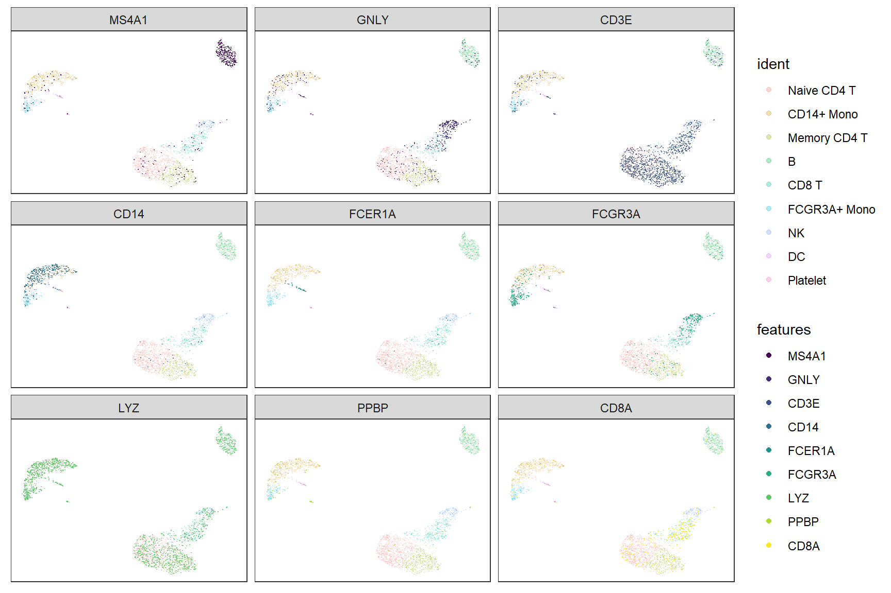
sc_dim(pbmc) +
sc_dim_geom_label(geom = shadowtext::geom_shadowtext,
color='black', bg.color='white')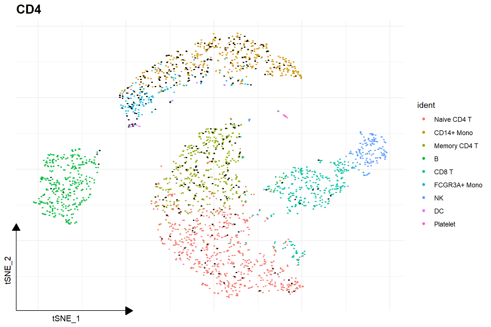
1.2 Visualize ‘features’ on a dimensional reduction plot
features = c("MS4A1", "GNLY", "CD3E",
"CD14", "FCER1A", "FCGR3A",
"LYZ", "PPBP", "CD8A")
FeaturePlot(pbmc,'CD4')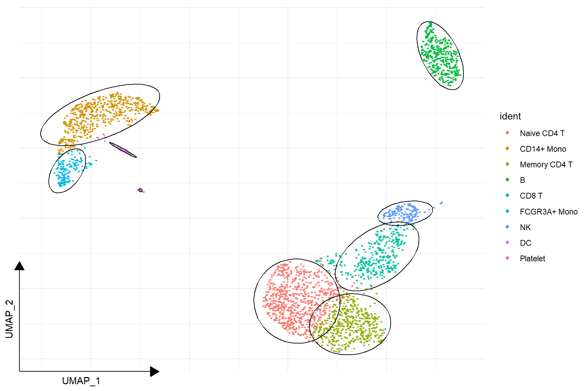
FeaturePlot(pbmc, features)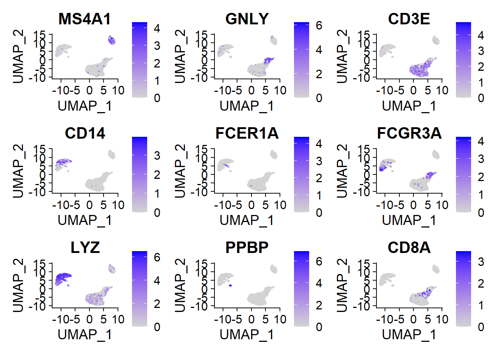
sc_feature(pbmc, 'CD4')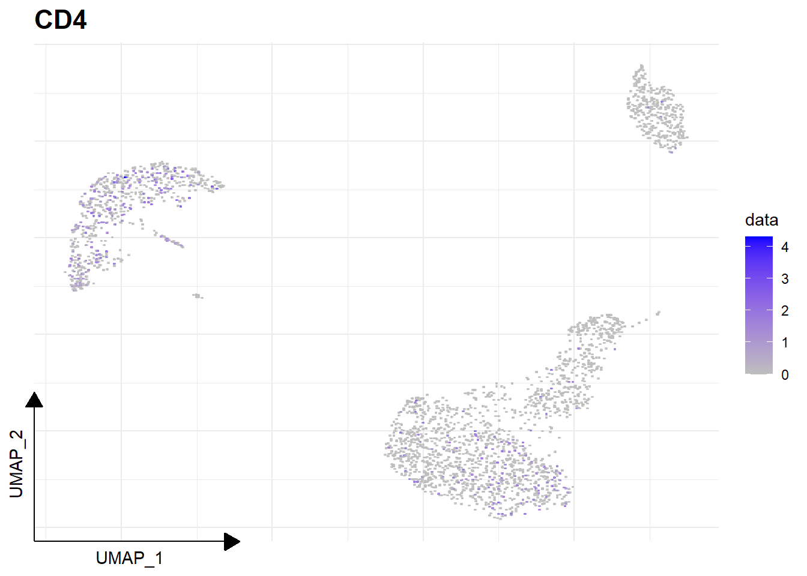
sc_feature(pbmc, features)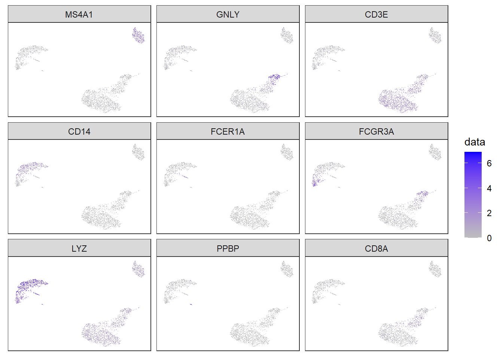
Here is the real ‘features’ on dimensional plot
sc_dim(pbmc) +
sc_dim_geom_feature(pbmc, 'CD4', color='black')
sc_dim(pbmc, alpha=.3) +
ggnewscale::new_scale_color() +
sc_dim_geom_feature(pbmc, features, mapping=aes(color=features)) +
scale_color_viridis_d()
sc_dim(pbmc, reduction = 'tsne') +
sc_dim_geom_feature(pbmc, 'CD4', color='black')
sc_dim(pbmc, alpha=.3, reduction = 'tsne') +
ggnewscale::new_scale_color() +
sc_dim_geom_feature(pbmc, features, mapping=aes(color=features)) +
scale_color_viridis_d()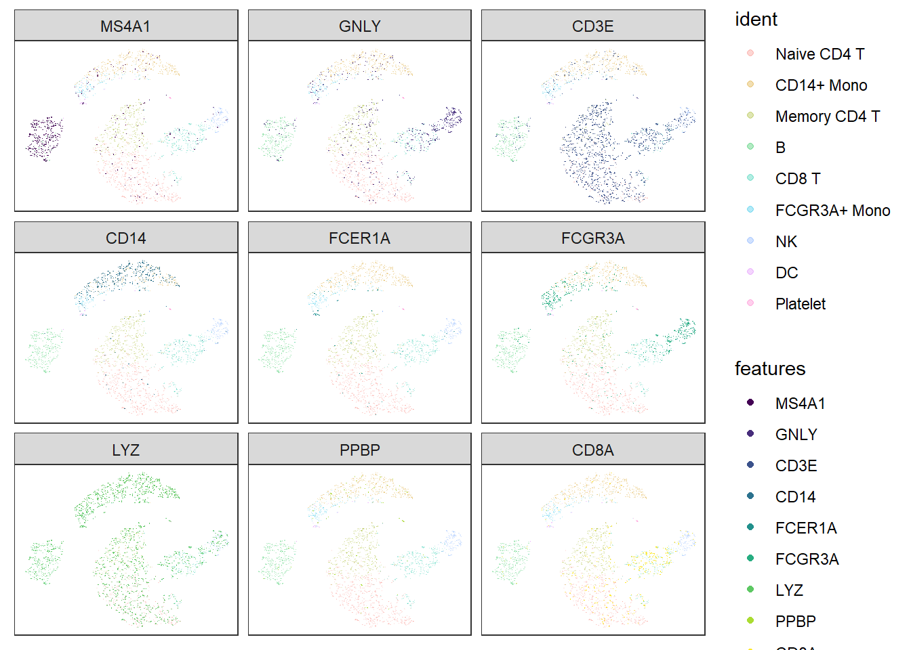
1.3 Visualize ellipse on a dimensional reduction plot
sc_dim(pbmc) +
sc_dim_geom_ellipse(level=0.95)
1.4 Visualize selected clusters
selected <- c("Naive CD4 T", "NK")
sc_dim(pbmc) +
sc_dim_sub(subset=selected)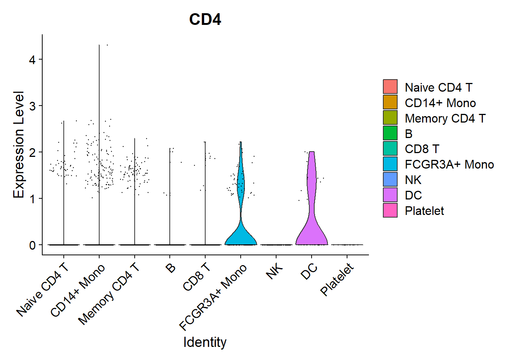
sc_dim(pbmc, color='grey') +
sc_dim_geom_sub(subset=selected) +
sc_dim_geom_label(geom = shadowtext::geom_shadowtext,
mapping = aes(subset = ident %in% selected),
color='black', bg.color='white')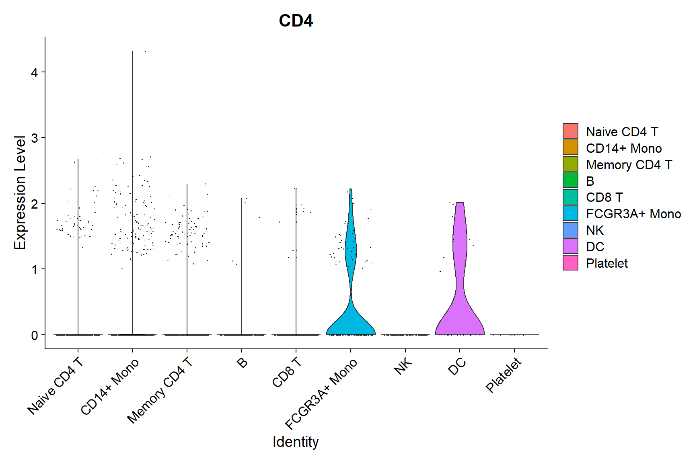
1.6 Violin plot of gene expression
VlnPlot(pbmc,'CD4')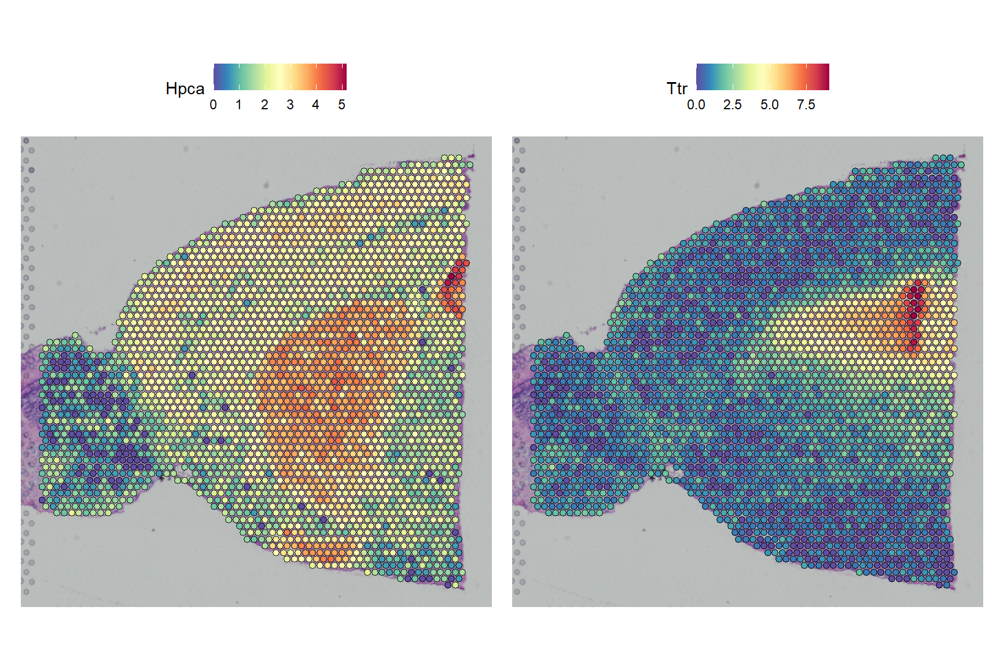
sc_violin(pbmc, 'CD4')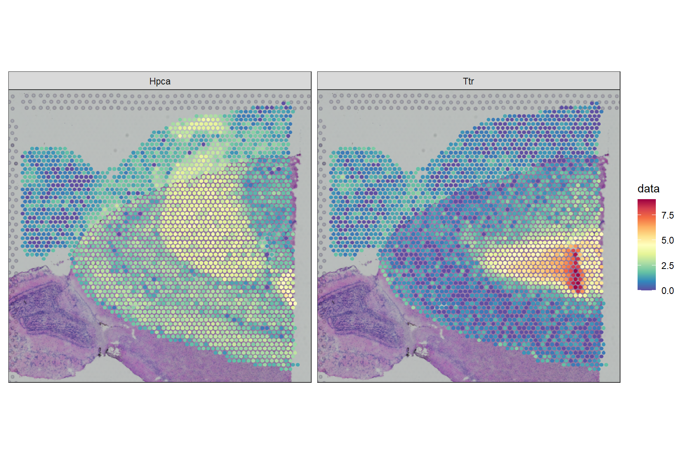
## allows applying an user-defined function to transform/filter the data
sc_violin(pbmc, 'CD4', .fun=function(d) dplyr::filter(d, value > 0)) +
ggforce::geom_sina(size=.1)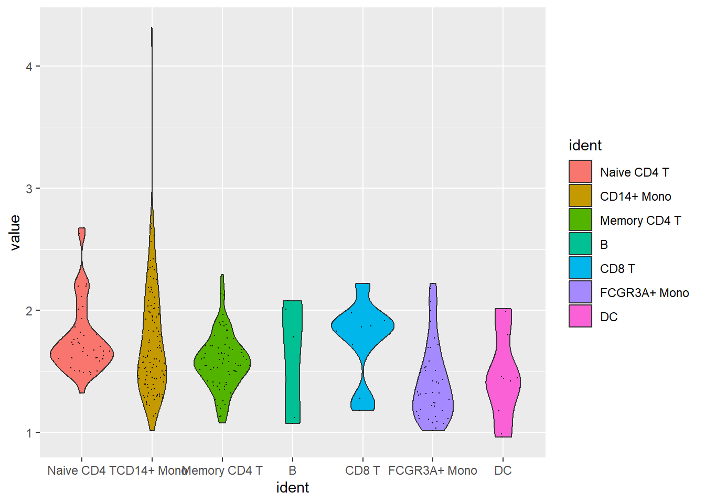
VlnPlot(pbmc, features)
sc_violin(pbmc, features) +
theme(axis.text.x = element_text(angle=45, hjust=1))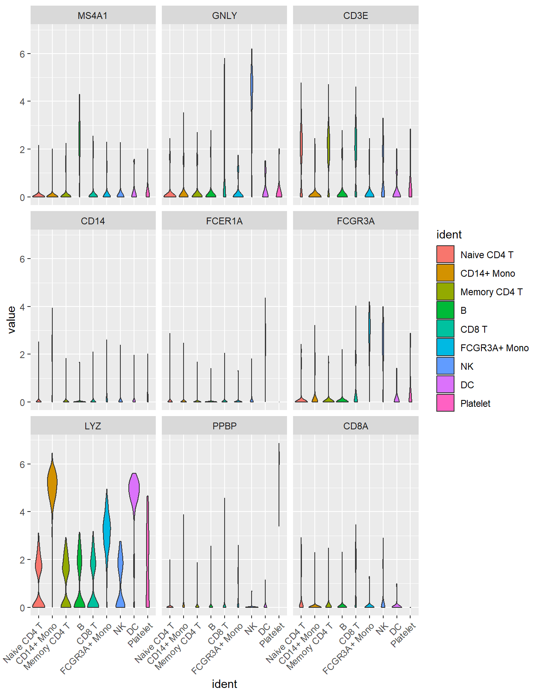
1.7 Spatial features
library(SeuratData)
# InstallData("stxBrain")
brain <- LoadData("stxBrain", type = "anterior1")
# Normalization
brain <- SCTransform(brain, assay = "Spatial", verbose = FALSE)
SpatialFeaturePlot(brain, features = c("Hpca", "Ttr"))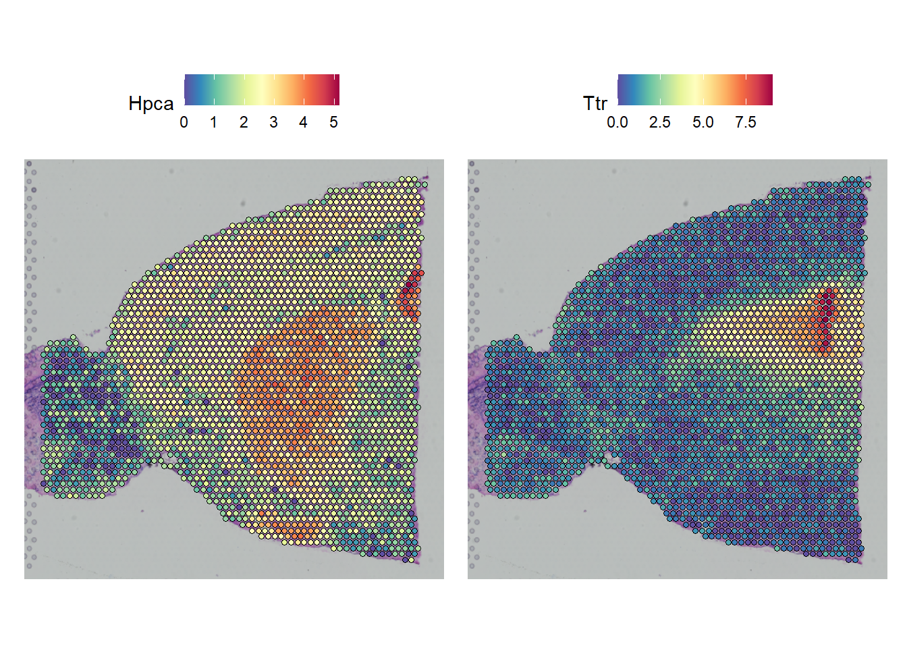
sc_spatial(brain, features = c("Hpca", "Ttr"))